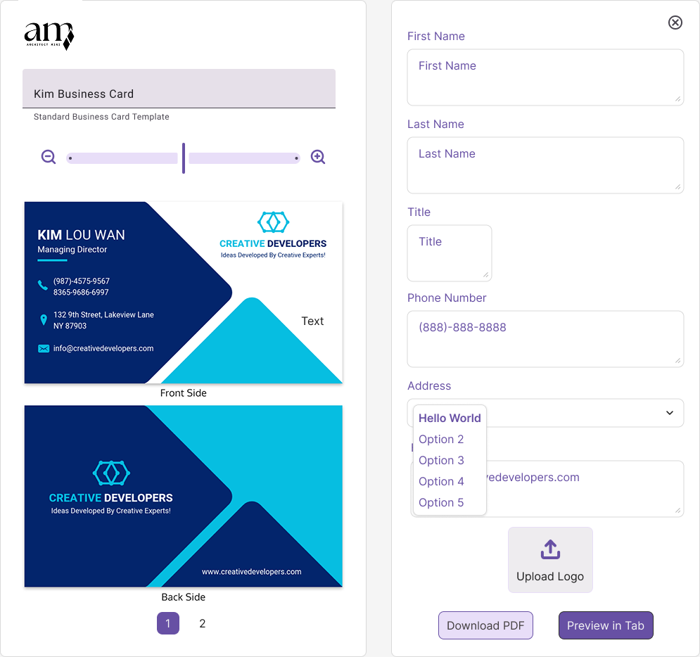

Architect Mini: Web-to-Print Template Builder
Architect Mini was developed as a branded web-to-print experience for business card creation, balancing polished presentation with a practical editing workflow. The project covered interface planning, identity design, and the structure needed to guide users from sign-in through export.
The work began with research and drafting around how a lightweight builder should behave for print customers. That early planning shaped the layout, editor hierarchy, naming requirements, and the right-panel form system so the tool would feel approachable instead of overwhelming.
From there, the UI design focused on a clean split-screen editor with a live preview, strong spacing, and clear controls for saved designs, text editing, and template selection. Supporting screens like the login experience were designed and implemented to feel consistent with the product's softer, branded visual direction.
The visual identity was also part of the project, including the Architect Mini logo mark and the extended wordmark treatment used throughout the interface. Together, the brand and product screens create a more cohesive presentation for the original concept and its first implementation pass.

This original UI design established the main editing experience, pairing a live front-and-back card preview with a structured control panel for content entry, logo upload, and export actions.

The login page implementation introduced a softer, branded entry point that lets returning users reopen saved templates while keeping the interface feeling simple and welcoming.
The logo design started with a compact mark that could stand on its own inside the product, giving the tool a recognizable identity that felt clean, editorial, and easy to place across screens.
The full wordmark expanded the brand system for use on the login screen and supporting materials, combining the mark with a straightforward type treatment for a more complete product identity.

Research and drafting are reflected in details like the required project-name alert, the save-state placement, and the simplified editing flow, all designed to keep the builder understandable for first-time users.

The form implementation supports the detailed card-building workflow, with editable fields, layer controls, logo upload, and preview actions that connect directly back to the live layout on the left.